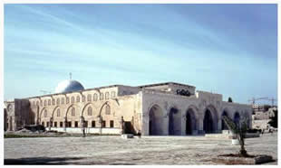

Au nom d’Allah le Clément, le Miséricordieux, Louanges à Allah.
Qui a construit l'Aqsa?

Première - Deuxième - Troisième - Quatrième partie
Qadi Cheik Jabal Libnan Mustapha Chahde
Radio du saint coran
(Na)Bukht Nassar en arabe (Nabuchodonosor) a fait la guerre à Bani Israël, en effet, il les attaquait chaque fois qu’ils devenaient mauvais. C’était une punition que Dieu infligeait à Bani Israël lorsqu’ils s’éloignaient de la religion. Et Bukth Nasar a détruit Al Alqsa et l’a pillé. Et c'est Uzayr qui a rebâti Al Alqsa. Puis, Dieu s’est vengé de Bani Israël après qu’ils aient tué le prophète Yahya, Jean Baptiste,  : Dieu les a châtié en leur envoyant les « rums » les romains, qui les ont maltraités et qui sont restés des centaines d’années en Palestine. Huit cent années où les Bani Israël ont été malmenés et se sont éparpillés, pendant ce temps, ils ont également abandonné l’Aqsa et construis un autre temple qui, plus tard, c’est fait détruire. Les romains ont même pris le masjid Al Alqsa comme déchèterie, à un point où ils y jetaient leurs plus grandes impuretés, toujours en représailles du meurtre de Yahya.
: Dieu les a châtié en leur envoyant les « rums » les romains, qui les ont maltraités et qui sont restés des centaines d’années en Palestine. Huit cent années où les Bani Israël ont été malmenés et se sont éparpillés, pendant ce temps, ils ont également abandonné l’Aqsa et construis un autre temple qui, plus tard, c’est fait détruire. Les romains ont même pris le masjid Al Alqsa comme déchèterie, à un point où ils y jetaient leurs plus grandes impuretés, toujours en représailles du meurtre de Yahya.
Et quand les romains ont cru avoir crucifié celui qu’il prenait pour Jésus, ils ont même pris l’endroit de l’enterré comme déchèterie. Il paraîtrait que c’est la mère de Constantin, Helena, qui aurait demandé d’enlever les déchets et d’y construire une église connue sous le nom de Qiyama « résurrection » dont les gens se moquaient en l’appelant Qimama « déchets ». Si bien que, même au temps du prophète,  , les romains étaient toujours en terre de Palestine.
, les romains étaient toujours en terre de Palestine.
Mais la question que beaucoup se posent est de comprendre pourquoi le prophète  n’a-t-il pas ouvert la Palestine ?
n’a-t-il pas ouvert la Palestine ?
Et pourquoi Omar l’a-t-il fait ?
Les gens ont alors pensé que le prophète  ne s’intéressait pas à l’Aqsa, mais à la Mecque ou encore qu’il ne s’intéressait qu’à la Mecque et à Médine.
ne s’intéressait pas à l’Aqsa, mais à la Mecque ou encore qu’il ne s’intéressait qu’à la Mecque et à Médine.
Or, Dieu a révélé au prophète  l’ouverture de l’Aqsa.
l’ouverture de l’Aqsa.
Le prophète devait donc s’y intéresser.
Seulement, le prophète,  ,voulait d’abord établir la religion de Dieu sur Sa terre préférée, la Mecque, puisque Dieu y avait fait construire la première maison (pour l’adoration) :
,voulait d’abord établir la religion de Dieu sur Sa terre préférée, la Mecque, puisque Dieu y avait fait construire la première maison (pour l’adoration) :
« La première Maison qui a été édifiée pour les gens, c'est bien celle de Bakka (la Mecque) bénie et une bonnedirection pour l'univers. »
Al imran 95
Or le prophète,  , n’a pas pu instaurer l’islam tout de suite à la Mecque, il l’a alors fait à Médine, puis il a ensuite ouvert la Mecque. Et c’était sa priorité en obéissance au commandement divin ! Quand le prophète
, n’a pas pu instaurer l’islam tout de suite à la Mecque, il l’a alors fait à Médine, puis il a ensuite ouvert la Mecque. Et c’était sa priorité en obéissance au commandement divin ! Quand le prophète  a eu fini, il s’est tourné vers la première « qibla » (direction pour prier) et Dieu lui a alors révélé que la mosquée d’Al Alqsa serait ouverte par l’un de ses compagnons (Sahaba). Et on raconte, (mais cela n’est pas sûr), que le prophète,
a eu fini, il s’est tourné vers la première « qibla » (direction pour prier) et Dieu lui a alors révélé que la mosquée d’Al Alqsa serait ouverte par l’un de ses compagnons (Sahaba). Et on raconte, (mais cela n’est pas sûr), que le prophète,  aurait annoncé à Omar
aurait annoncé à Omar  , qu’il serait celui qui irait ouvrir Al Alqsa. Le prophète connaissait la valeur importante de l’Aqsa, c’était d’ailleurs sa première qibla.
, qu’il serait celui qui irait ouvrir Al Alqsa. Le prophète connaissait la valeur importante de l’Aqsa, c’était d’ailleurs sa première qibla.
Il y a une attache prouvée par le passage de la qibla de l’Aqsa vers celle d’al Haram, une liaison liée à l’adoration, mais aussi à un changement dans le dogme, puisque celui qui ne croit pas à l’isra, (voyage nocturne), devient « kafir» , puisque l’évènement est cité dans le Qur'an.
« Gloire et Pureté à Celui qui de nuit, fit voyager Son serviteur [Mohammad], de la Mosquée Al-Haram à la Mosquée Al-Aqsa dont Nous avons béni l'alentours, afin de lui faire voir certaines deNos merveilles. C'est Lui, vraiment, qui est l'Audient, le Clairvoyant. »
Le voyage nocturne, verset 1.
D’où l’importance de la mosquée en ce qui concerne le dogme islamique.
Et dans un Hadith, le prophète,  , parle des trois mosquées, (l’Aqsa, la M édine et la Mecque), où il nous décrit les bienfaits de la visite de chacune d’entre elles, où la valeur des prières est multipliée. On ne peut donc pas dire qu’il ne s’y intéressait pas.
, parle des trois mosquées, (l’Aqsa, la M édine et la Mecque), où il nous décrit les bienfaits de la visite de chacune d’entre elles, où la valeur des prières est multipliée. On ne peut donc pas dire qu’il ne s’y intéressait pas.
On sait donc que le prophète,  savait que l’Aqsa serait ouverte et qu’il s’yintéressait. De plus, dans un Hadith Sahih rapporté par les cheikhs Al-Bukhâri et Muslim, on sait que Awf ben Malik a dit :
savait que l’Aqsa serait ouverte et qu’il s’yintéressait. De plus, dans un Hadith Sahih rapporté par les cheikhs Al-Bukhâri et Muslim, on sait que Awf ben Malik a dit :
« Je suis allé visiter le prophète,  dans l’une de ses demeures et après lui avoir lancé le salam, il m’a invité à entrer (le voyant joyeux, je lui ai dit pour plaisanter) « tout ou en parti ? » Alors il a dit « tout » et le prophète m’a confié les six signes de la fin du monde :
dans l’une de ses demeures et après lui avoir lancé le salam, il m’a invité à entrer (le voyant joyeux, je lui ai dit pour plaisanter) « tout ou en parti ? » Alors il a dit « tout » et le prophète m’a confié les six signes de la fin du monde :
La mort de votre prophète. Alors Awf a dit : « J’ai pleuré à ne plus en pouvoir alors le prophète m’a calmé en me disant : « dit un »
L’ouverture de l’Aqsa (et c’est là que l’on peut voir que le prophète était attaché à l’Aqsa puisqu’il était heureux ce jour même si l’ouverture aurait lieu après sa mort.)Puis le prophète lui a demandé de dire deux.
Les musulmans vont tomber, (il y aura beaucoup de morts, un grand carnage,) et le prophète lui a dit : « dis trois »
Une énorme « fitna » parmi les musulmans
L’argent abondera tellement au sein de la communauté que 100 dinars paraîtront peu.
Un traité de paix entre les musulmans et Bani asfar (et on dit que ce sont les romains= l’ouest) Ce traité ne sera pas respecté et les 80 pays enverront leur 80 armées chacune comportant 12 000 soldats. Les musulmans seront tellement attaqués que leur rassemblement sera comme une petite tente dans le pays de Châm. »
Awf ibn Malik a dit :
« Je suis allé rendre visiteau Prophète lors de l’expédition de Tabuk alors qu’il était sous une tente de cuir. Il dit : « Six signes indiqueront l’approche de la Dernière Heure : ma mort, la conquête de Jérusalem, la peste qui vous emportera comme la peste emporte le mouton, l’augmentation des biens au point qu’on donnera 100 dinars à un homme sans qu’il soit satisfait, puis une épreuve qui entrera dans chaque maison arabe. Puis, une trêve entre vous et les banu’l-Asfar qui trahiront et vous attaqueront sous huit drapeaux avec 12000 hommes sous chaque drapeau. »
(al-Al-Bukhâri).
Est-ce que cela va se passer au temps de Jésus et du Mahdi ? Dieu sait mieux. Mais ce n’est pas l’époque actuelle, car ce sera un temps où des régiments entiers de musulmans partiront et mourront jusqu’à ce que Dieu nous donne la victoire. Ce sera des temps très difficiles.
Maintenant, pourquoi n’est ce pas le prophète,  qui a ouvert Al Alqsa et peut être en voici la sagesse : en effet, Al Alqsa a toujours été libérée par des prophètes, or Dieu ne veut peut être pas que le prophète,
qui a ouvert Al Alqsa et peut être en voici la sagesse : en effet, Al Alqsa a toujours été libérée par des prophètes, or Dieu ne veut peut être pas que le prophète,  l’ouvre à son tour pour que les musulmans croient que seuls les prophètes peuvent ouvrir Jérusalem. Dieu ne veut pas nous décourager, et nous a donné la leçon qu’un homme normal (Omar) a pu le faire, donc nous aussi. Or, il faut se rappeler que Omar avait une armée de 10000 hommes qui combattaient des armées (les perses et les Rum) dont les équipées pouvaient comporter 100000 hommes ! C’est aussi un enseignement pour les musulmans qui doivent comprendre que pour gagner, ils doivent avoir de sincères intentions envers Dieu. Enfin, c’est comme si Dieu nous interpellait pour nous dire que l’on ne doit pas attendre les prophètes pour ouvrir Al Alqsa et que c’est devenu notre responsabilité.
l’ouvre à son tour pour que les musulmans croient que seuls les prophètes peuvent ouvrir Jérusalem. Dieu ne veut pas nous décourager, et nous a donné la leçon qu’un homme normal (Omar) a pu le faire, donc nous aussi. Or, il faut se rappeler que Omar avait une armée de 10000 hommes qui combattaient des armées (les perses et les Rum) dont les équipées pouvaient comporter 100000 hommes ! C’est aussi un enseignement pour les musulmans qui doivent comprendre que pour gagner, ils doivent avoir de sincères intentions envers Dieu. Enfin, c’est comme si Dieu nous interpellait pour nous dire que l’on ne doit pas attendre les prophètes pour ouvrir Al Alqsa et que c’est devenu notre responsabilité.
Dans un récit qui n’est pas authentique, le prophète,  aurait dit avoir vu des déchets à Al Alqsa pendant son Isra. Il aurait été très fâché. Il aurait envoyé une lettre au chef des Rum en lui disant que ce qu’ils faisaient est très mauvais et qu’ils méritaient d’être punis comme les juifs l’ont été quand ils ont tué Yahya, sur lui la paix. Ayant lu la lettre, le chef des Rum décida d’enlever les déchets, mais son ordre fut mal exécuté et seulement le tiers fut retiré. C’est lorsque Omar entra à Al Alqsa que la mosquée fut nettoyée.
aurait dit avoir vu des déchets à Al Alqsa pendant son Isra. Il aurait été très fâché. Il aurait envoyé une lettre au chef des Rum en lui disant que ce qu’ils faisaient est très mauvais et qu’ils méritaient d’être punis comme les juifs l’ont été quand ils ont tué Yahya, sur lui la paix. Ayant lu la lettre, le chef des Rum décida d’enlever les déchets, mais son ordre fut mal exécuté et seulement le tiers fut retiré. C’est lorsque Omar entra à Al Alqsa que la mosquée fut nettoyée.
On en conclue que personne ne peut dire que le prophète,  ne se souciait de Bayt al Maqdiss.*
ne se souciait de Bayt al Maqdiss.*
De même, après le prophète,  , Abû Bakr et Omar furent les deux hommes les plus importants de la communauté, débarrassant les musulmans des apostats après la mort du prophète et dispersant l’islam sur de nombreux continents.
, Abû Bakr et Omar furent les deux hommes les plus importants de la communauté, débarrassant les musulmans des apostats après la mort du prophète et dispersant l’islam sur de nombreux continents.
Omar était un grand chef, l’homme de la situation. Son chef des armées était Khalid ben Walid, connu pour sa victoire sur l’Irak et le pays de Châm. Khalid avait combattu également contre les apostats. Mais, il était tellement vaillant que les croyants commençaient à ne plus vouloir combattre que sous lui, ne voulant pas que les croyants croient que la victoire venait de Khalid à la place de Dieu, Omar mis Abou Oubayda à sa place en tant que chef. Et, il mit Khalid sous ses ordres. Ils finirent la victoire dans le pays de Châm et ils encerclèrent la ville d’Iliyas* où régnait Artabon, bras droit de l’empereur des Rums, un homme de guerre. Le chef des musulmans était Amr ben Al Aws de qui Omar  a dit : « On s’est attaqué à Artabon des rums par le Artabon des musulmans. Au plus intelligent des Rums, on a envoyé le plus intelligent des musulmans. »
a dit : « On s’est attaqué à Artabon des rums par le Artabon des musulmans. Au plus intelligent des Rums, on a envoyé le plus intelligent des musulmans. »
Mais, il n’était pas le seul à encercler la ville puisqu’en fait, les musulmans s’étaient dispersés sur plusieurs positions.
Arrivé à Al Alqsa,Oubayda a envoyé une lettre à Omar  où il disait en d’autres mots :
où il disait en d’autres mots :
« Au nom d’Allah le Clément le Miséricordieux,
Salut au serviteur de Dieu Omar, prince des croyants, mais après…
Je t’annonce que nous avons rencontré une armée romaine tellement nombreuse que nous n’en avons jamais vu de telle, aussi nous ont-ils attaqué se croyant invincible, faisant la guerre comme jamais, mais Dieu nous a donné l’endurance et la victoire et les a tué partout où ils étaient…Et j’ai envoyé un délégué à Artabon pour lui présenter l’islam… »
Et Omar  , lui a répondu :
, lui a répondu :
« D’Omar, serviteur de Dieu, Je louange Dieu. J’ai reçu ta lettre où tu expliques comment Dieu vous a donné la victoire et certes tu dois remercier Dieu, car tu n’as gagné ni par la force, ni par ton savoir, mais grâce à Dieu aussi remercie Le. »
Après l’encerclement d’Al Alqsa, les habitants de la ville répondirent par les armes, mais ils ne gagnèrent pas, aussi demandèrent-ils la paix, mais ils voulurent seulement signer le contrat avec Omar. Et Oubayda,  , ne prenait pas de décision avant de parler avec Moaza,
, ne prenait pas de décision avant de parler avec Moaza,  , ce dernier luiproposa de vérifier la sincérité de la demande, puis s’étant rassuré de leurs intentions, ils envoyèrent une très belle lettre à Omar. Celui-ci (Omar) rassembla les leaders de l’état et leur lu la lettre pour leur demander leurs avis. Othman
, ce dernier luiproposa de vérifier la sincérité de la demande, puis s’étant rassuré de leurs intentions, ils envoyèrent une très belle lettre à Omar. Celui-ci (Omar) rassembla les leaders de l’état et leur lu la lettre pour leur demander leurs avis. Othman  , commença ensuite à parler, en d’autres mots:
, commença ensuite à parler, en d’autres mots:
« Que Dieu te guide, Dieu les a vaincu, leur a montré la défaite, a éliminé les plus forts d’entre eux…si tu ne leur réponds pas, ils se sentiront encore plus faibles, ils accepteront alors que les musulmans les dirigent et payeront le tribut**. Sinon, les musulmans les encercleront jusqu’à ce qu’ils se rendent. »
Omar  , demanda un autre avis. (Et, c’est une des raisons qui nous pousse àcroire qu’il avait été mis au courant par le prophète,
, demanda un autre avis. (Et, c’est une des raisons qui nous pousse àcroire qu’il avait été mis au courant par le prophète,  ). Par politesse Ali,
). Par politesse Ali,  , patienta pour être sûr quepersonne ne désire prendre la parole, puis il se leva et dit qu’il avait un autre avis :
, patienta pour être sûr quepersonne ne désire prendre la parole, puis il se leva et dit qu’il avait un autre avis :
« S’ils demandent cela, (le traité de paix), c’est qu’ils ont accepté leur défaite et que tu as gagné. Alors vas-y, même si le voyage est difficile, tu gagneras une récompense de Dieu, et si tu le fais, on en finira avec cet état de guerre. Par contre, si tu n’y vas pas, je crois que ces derniers vont se renforcer, ou obtenir des renforts et cela aura donc un effet contraire. Les musulmans vont se fatiguer et si l’un d’eux meurt, vous le regretterez. »
Ce récit est important, car on voit que donner ou prendre des avis est nécessaire. Aujourd’hui, si on donne un avis, les gens le prennent mal, parfois on se fait virer, mettre en prison ou tuer parce qu’on a donné son avis !
Mais, voyons plutot, comment Omar leur a répondu et on peut voir à nouveau la morale islamique s’exprimer à travers les bonnes manières d’Omar envers ses compagnons. Il a commencé par celui dont il n’allait pas prendre son avis,Othman,  et il lui a dit : « Tu as bien compris la stratégie de l’ennemi »
et il lui a dit : « Tu as bien compris la stratégie de l’ennemi »
Et se tournantvers Ali,  il lui a dit : « Quant à Ali, tu as bien compris la valeur desmusulmans » Puis, Omar s’est levé et a dit : « On va partir dans la garde de Dieu. »
il lui a dit : « Quant à Ali, tu as bien compris la valeur desmusulmans » Puis, Omar s’est levé et a dit : « On va partir dans la garde de Dieu. »
Il a emmené aveclui dans ce voyage les têtes de l’état et a mis Ali  à sa place (à Médine ?).Puis, Omar
à sa place (à Médine ?).Puis, Omar  a envoyé un message à Oubayda pour lui dire qu’il allait arriver !
a envoyé un message à Oubayda pour lui dire qu’il allait arriver !
Et la suite sera pour une prochaine fois, in chaAllah !!!!!
**jizyah : tribut
*Al Alqsa : al-Quds, ou encore Bayt al-Maqdis ou al-Bayt al-muqaddas et aussi Iliya.
Que la paix et les bénédictions d'Allah soient sur le prophète Mohammad, celui qui a tenu sa promesse, le confident. Ô Allah nous ne savons que ce que Tu nous as appris, c’est Toi qui détiens la science. Ô Allah apprend nous ce qui nous apportera du bien et fais nous profiter du bien de ce que Tu nous as appris et augmente nos connaissances. Et embelli le bien à nos yeux et aide nous à le suivre. Et enlaidi le mal à nos yeux et aide nous à nous en détourner. Et mets nous parmi ceux qui écoutent la parole et suivent les meilleures d’entre elles. Et fais de nous tes bons adorateurs par Ta miséricorde.
Gloire à Toi Seigneur, que Tes louanges soient célébrées, j'atteste qu'il n'y a de divinité que Toi, j'implore Ton pardon et je reviens vers Toi repentante.